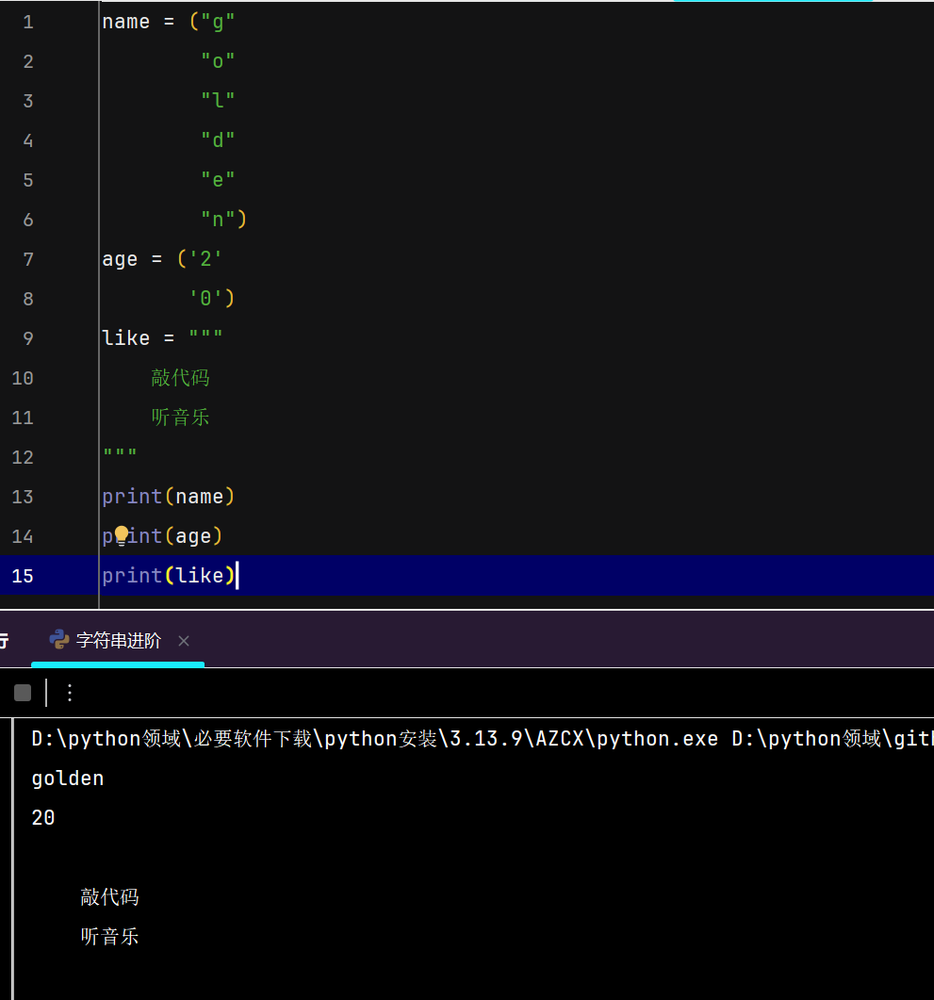
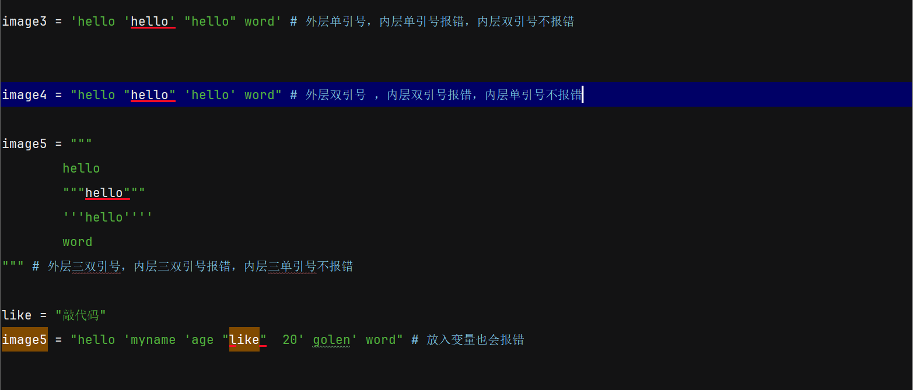
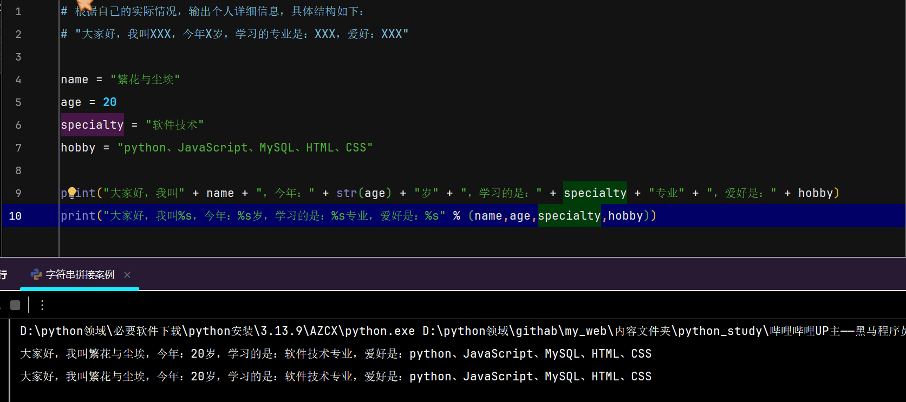

字符串进阶
- 字符：是文本世界的基本单位，一个字母，一个数字，一个标点符号，一个汉字等都是 都是一个字符
-
字符串的三种定义方式
- 第一种：双引号包裹
- 第二种：单引号包裹
- 第三种：三引号包裹(同样有单/双之分，但是效果一致)
- 注意：正常来说：单/双引号包裹的字符串，只在一行有效，但是IDE在换行的时候会自动创建，单/双引号
尽管会自动换行，但是输出结果也是在一行 - 注意：三引号在不赋值给变量的时候，可以当注释使用，因为它的换行特性，最主要的是：输出的形式与字符串形式一致
-

-
注意事项
- 字符串三种方法，可以混在一起使用，但是最外层的方法不能重复使用
-
注意事项：引号嵌套规则
- 最外层的引号决定了字符串的边界，内层不能出现相同引号，否则会提前结束字符串。
- ✅ 正确：
name = "外层双引号，内层可以使用'单引号'或\"转义双引号\"" - ❌ 错误：
name = "外层双引号，内层"再写双引号"就会报错" - 最佳实践：避免多层嵌套，必要时使用转义符
\或换一种外层引号。 -

-
常见转义字符
转义字符 名称 作用 \'单引号 表示单引号 '\"双引号 表示双引号 "\n换行符 开始新的一行(换行) \t制表符 增加缩进，缩进一个制表符( tab)的大小注意没有 \"""但是可以： \"\"\"或\'\'\'代替
字符串的拼接
- 第一种：多个字符串字面量自动拼接
- 第二种：跟
JavaScript一样，可以使用运算符+号，进行拼接 - 注意：运算符
+号，无法将非字符串与字符串进行拼接(非字符串类型需要转为字符串类型) - 这就是
python与JavaScript的不同，python不具备隐式转换的形式
JavaScript只要一边是字符串，另一边会隐式转换成字符串，进行拼接
python不会隐式转换，需要自己手动的将非字符串类型转为字符串，最后再拼接，这也为后续运算符的区别埋下伏笔 - 字符拼接案例
字符串的格式化
-
方法一：
%s占位符- 通过
%s占位符的形式完成字符串和变量的快速拼接 - 其中
%表示我要占位，s表示将变量转为字符串放入占位的位置 - 注意：s是小写，不是大写
- 语法：
s1 = "繁花与尘埃"
print("大叫好，我叫 %s，现在再学python" % s1) -
尤其注意：结尾需要
% 变量，变量是需要拼接的变量名，字符串内%s固定搭配 - 可以多个占位符一起使用，字符串内占位符数量，与后续的变量名数量一致，占位顺序一一对应，且需要英文括号括起来
-

- 由图可见，使用字符串的格式化，比使用运算符 +号可读性更好
- 通过
-
字符串格式化——f-string
-
JavaScript的模板字符串与python的 f-string语言 语法 示例 JavaScript`${变量名}`let name = "繁花与尘埃"
console.log(`大家好。我叫${name}`)pythonf"{变量名}"name = "繁花与尘埃"
print(f"大家好，我叫{name}")它们之间的区别 特性 JavaScript模板字符串`${}`pythonf-stringf"{}"变量 ✅ ✅ 算术运算 ✅ `${a + b}`✅ f"{a + b}"函数调用 ✅ `${fn()}`✅ f"{fn()}"对象/数组特性 `${obj.prop}`、`${arr[0]}`✅ f"{obj.prop}"、f"{arr[0]}"方法调用 ✅ `${str.toUpperCase()}`✅ f"{str.upper()}"列表/字段推导 ❌不能直接写推导式，但可以先定义变量 ✅ f"{[x*2 for x in range(5)]}"三元表达式 ✅ `${cond ? a : b}`✅ f"{'a' if cond else 'b'}"转义字符 ✅支持反斜杠 ❌大括号内不允许反斜杠，需要变量中转 嵌套模板 ✅ `${`${nested}`}`❌不能嵌套f-string，但可调用格式化函数
-